Particions i Gestió de Disc Windows
Afegir un Disc Nou en Windows
Quan afegim un disc nou a un sistema Windows, potser no apareixerà automàticament. Això és habitual, ja que cal inicialitzar-lo, crear una partició i assignar-li un volum perquè sigui utilitzable. A continuació, veurem com fer-ho pas a pas.
Connecta el disc nou a l'ordinador.
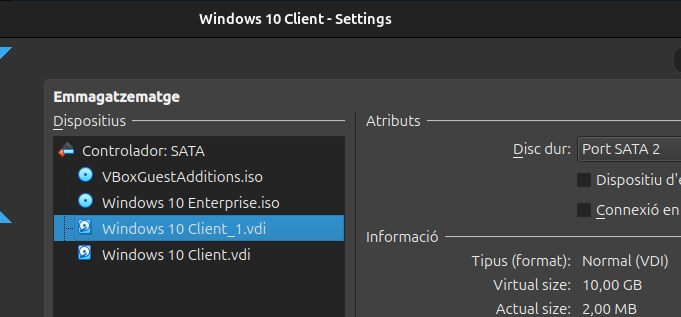
Accedeix a la gestió de discs. Escriu disc al cercador de Windows i selecciona l'opció Create and format hard disk partitions.
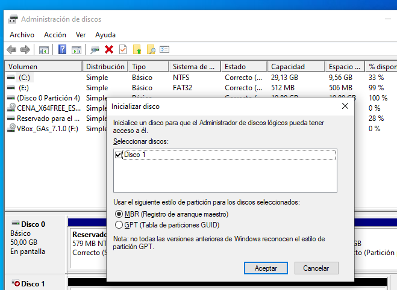
El disc nou hauria d'aparèixer com a No assignat. Fes clic dret sobre aquest espai i selecciona New Simple Volume.
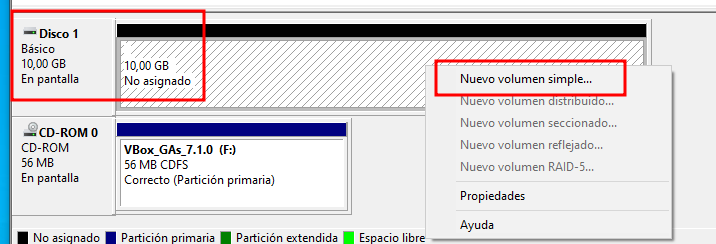
Selecciona la mida de la nova partició. Pots utilitzar tot l'espai disponible o dividir-lo en diverses particions.
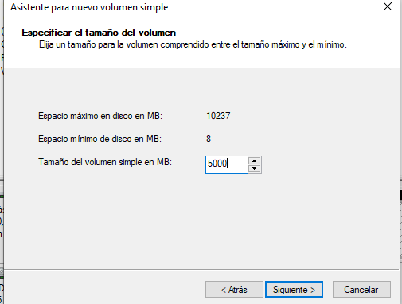
Pots assignar una lletra de unitat o munta el disc dins d’un directori NTFS existent.
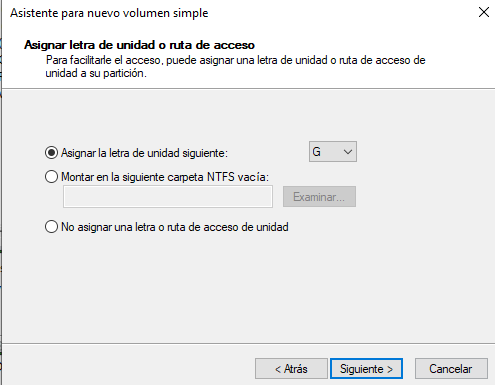
Tria el sistema de fitxers. Per a aquesta pràctica, seleccionem FAT32. També pots definir una etiqueta de volum i la mida de la unitat d'assignació.

Finalitza la configuració. El disc ja està llest per utilitzar. Opcionalment, pots crear dues particions: una en FAT32 i una altra en NTFS.
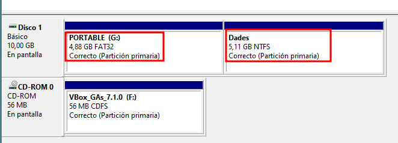
Comprovació amb DiskPart
Utilitza la línia d'ordres amb l’eina diskpart per veure informació sobre discos, particions, estat i sistema de fitxers:
diskpart
list disk
list volume
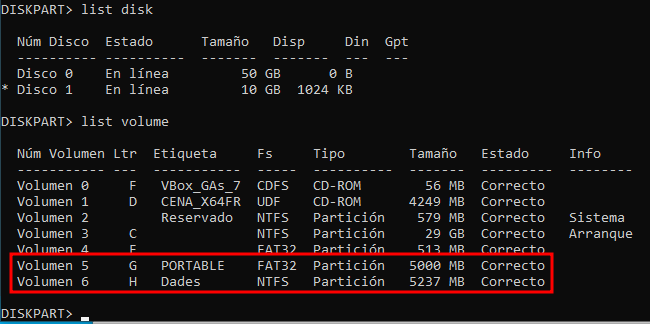
Gestió de quotes de disc i usuaris a Windows
Quotes de disc
Les quotes de disc serveixen per limitar l’espai d’emmagatzematge que pot fer servir cada usuari dins d’un disc concret. Aquesta funcionalitat és especialment útil en entorns compartits, com pot ser una escola o una empresa, per evitar que un sol usuari ocupi tot l’espai disponible del sistema.
Activació de les quotes des de les polítiques de Windows
El primer pas consisteix a activar les quotes a través de les polítiques de sistema. Per fer-ho, es pot utilitzar l’Editor de polítiques locals o altres eines d’administració avançada.
Nota: Es necessita permisos d’administrador per aplicar aquests canvis.
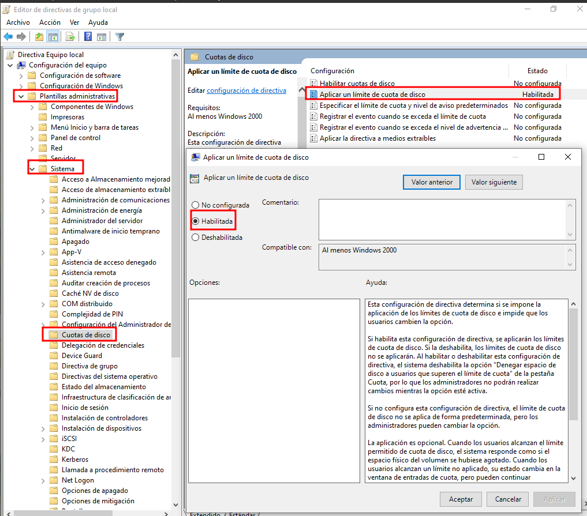
Aplicar quotes en un disc concret
- Obre l’Explorador de fitxers i localitza el disc sobre el qual vols aplicar les quotes.
- Important: Assegura’t que el disc utilitza el sistema de fitxers NTFS, ja que les quotes no són compatibles amb FAT32.
- Fes clic dret al disc i selecciona Propietats.
- A la finestra que apareix, obre la pestanya Quota.
- Clica a Mostra la configuració de quotes per accedir a les opcions detallades.
Configuració de la quota
Un cop dins la configuració, es poden definir:
- L’activació del control de quotes.
- El límit màxim d’espai per usuari.
- Si es mostraran avisos o si es bloquejarà l’escriptura quan es superi el límit.
Els límits es poden establir en KB, MB o GB. En el nostre cas, s’ha triat MB per aplicar una quota moderada i adequada a un entorn de pràctiques.
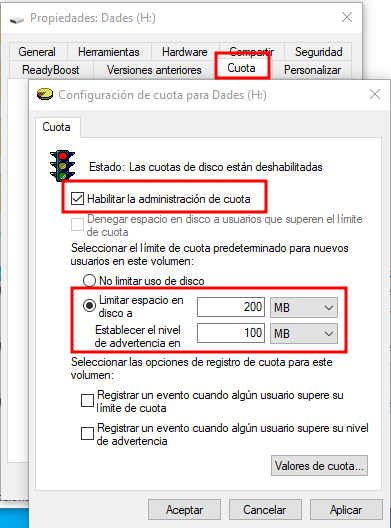
Quan això estigui aplicat, cada usuari només podrà fer servir l’espai que se li ha assignat.
Gestió d’usuaris a Windows
Windows ofereix diferents maneres de gestionar els comptes d’usuari locals. Una de les més còmodes és a través de l’eina netplwiz.
Accés a l’eina netplwiz
- Escriu
netplwizal cercador del menú Inici. - També es pot obrir des del "Panell de control avançat de comptes d’usuari".
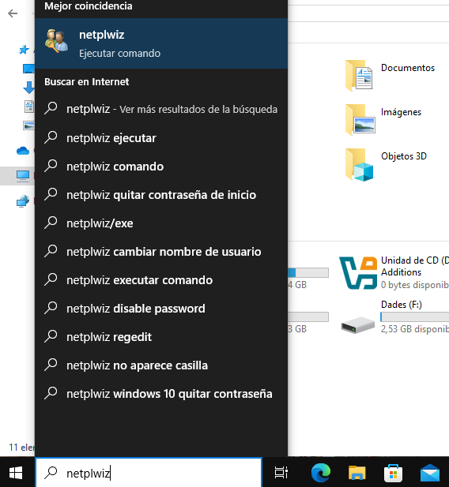
Aquesta eina permet veure i gestionar els usuaris del sistema de forma senzilla.
Creació i gestió avançada d’usuaris
- A la finestra principal, veuràs la llista d’usuaris. Clica Afegeix per crear un nou compte.
- Per opcions més avançades, fes clic al botó Advanced. Això obrirà la consola Usuaris i grups locals (Local Users and Groups).
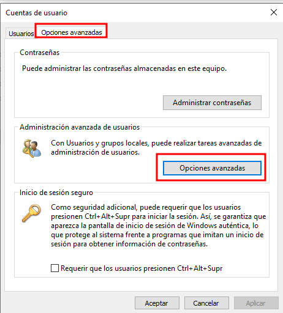
Crear un nou usuari
- A la secció Users, fes clic dret i selecciona Nou usuari.
- Introdueix:
- Nom d’usuari.
- Contrasenya (opcional).
- Descripció (si es vol).
- I configura si cal canviar la contrasenya en el següent inici de sessió o si es vol deshabilitar el compte.
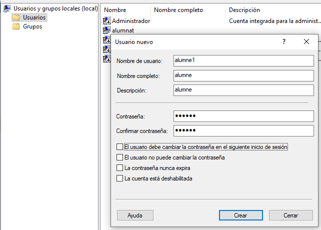
Per fer pràctiques, s’han creat usuaris com Alumne1 i Alumne2.
Creació d’un grup nou
Per agrupar aquests usuaris en un mateix conjunt i poder aplicar permisos compartits:
- A la secció Groups, fes clic dret i selecciona New Group.
- Dona-li un nom (per exemple,
Pràctiques). - Afegeix els usuaris clicant a Add i escrivint els seus noms.
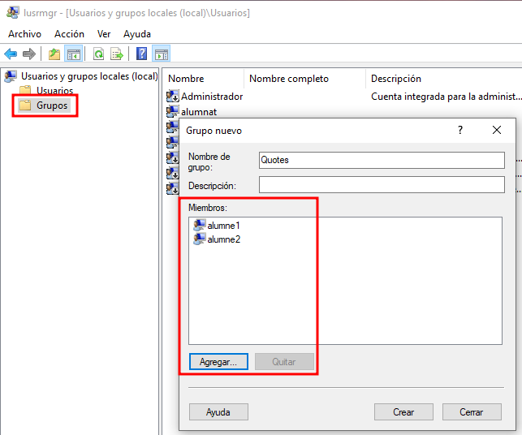
Aquesta agrupació facilita la gestió de permisos per a carpetes, aplicacions o recursos compartits.
Verificació dels grups d’un usuari
Pots comprovar a quin grup pertany un usuari:
- Fes clic dret sobre l’usuari.
- Selecciona Propietats.
- Ves a la pestanya Member Of, on es mostrarà si pertany a grups com
Users,Administratorso el grupPràctiques.
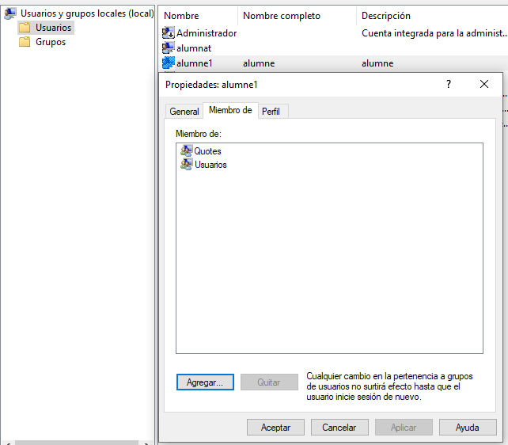
Proves amb els nous usuaris
Després de configurar-ho tot, es pot iniciar sessió amb un dels nous comptes (per exemple, Alumne1) per comprovar el funcionament del sistema.
En una prova, en intentar copiar un fitxer gran, ha aparegut un missatge de “Above limit”, indicant que s’ha superat el límit de la quota establerta. Encara que es permet continuar, aquest avís es pot configurar perquè bloquegi completament l’escriptura si se superen, per exemple, els 300 MB. Això es gestiona des de la configuració de quotes del sistema de fitxers NTFS.
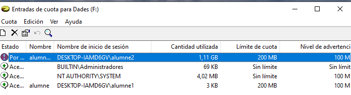